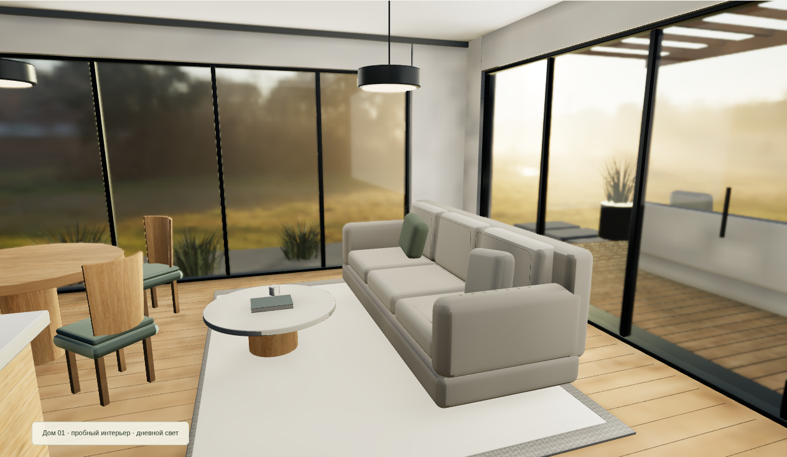

Новая версия гостиной.
Настоящий кадр работающей браузерной сцены: новая мебель и ткань, рассчитанный дневной свет и небольшое изменение ракурса.

Мобильный кадр · Короткий показ GIF · Пробная 3D-сцена
Это один контрольный ракурс с фиксированным дневным светом. Он не заменяет основной прототип или готовый сайт. Панорама за окнами — условное окружение. Монтаж GIF состоит из трёх настоящих кадров; это не запись FPS. Физический iPhone/Safari не проверен. Изображение-ориентир Image Gen в этот показ не включено. Публичный интерактивный хостинг пока отсутствует; raw HTML не является работающим сайтом. Рабочий сервер не менялся.
Происхождение ресурсов и лицензии